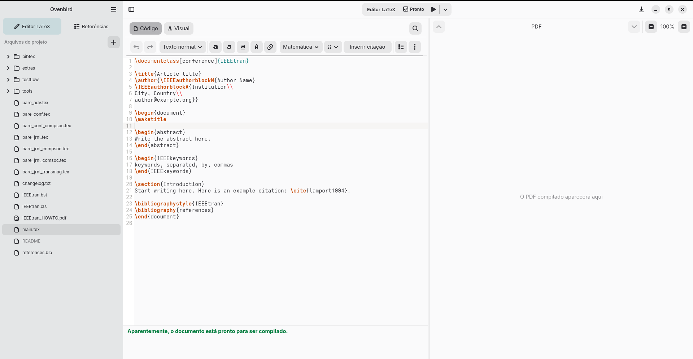

Dos modos, un documento
Alterna entre Código y Visual mientras trabajas con el mismo contenido LaTeX. El modo Visual facilita las tareas habituales y el código original sigue disponible.
Escritura científica · GNOME · LaTeX
Ovenbird reúne la edición de documentos LaTeX y una biblioteca bibliográfica local en una aplicación creada para GNOME. Tus archivos siguen siendo tuyos: sencillos, portátiles y sin formatos propietarios.
Descarga la aplicación ↓ Descubre las funciones ↓Versión 0.4.0 disponible

01 · Descarga
La versión 0.4.0 para Linux x86_64 está disponible para descargar en formato Flatpak.
Si Flatpak aún no está configurado en tu equipo, sigue las instrucciones para preparar tu sistema antes de instalar la aplicación.
Descargar Ovenbird 0.4.002 · Funciones
Alterna entre Código y Visual mientras trabajas con el mismo contenido LaTeX. El modo Visual facilita las tareas habituales y el código original sigue disponible.
Registra, busca y organiza referencias en una biblioteca independiente de tus proyectos. Inserta citas en documentos LaTeX.
Importa archivos .bib y exporta tu biblioteca para compartir referencias entre proyectos y herramientas.
Interfaz creada con GTK 4 y Libadwaita, pensada para Linux con GNOME.
03 · Cómo funciona
Ovenbird trabaja con formatos conocidos. Abre un documento o una carpeta de proyecto y sigue usando tus herramientas.
Tus documentos son archivos .tex normales, sin formatos cerrados.
Abre archivos con el selector del escritorio. La aplicación no pide acceso irrestricto a tu carpeta personal.
Tu biblioteca se guarda en tu equipo y funciona sin conexión.

04 · Creador del proyecto
Soy ingeniero de software e investigador. Creé Ovenbird para reunir la escritura en LaTeX y la gestión bibliográfica en una aplicación nativa para GNOME.
Visita mi sitio web ↗